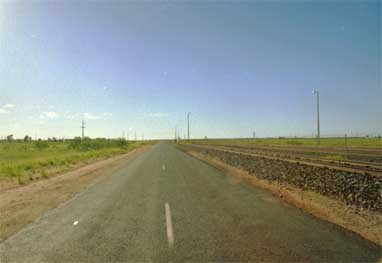

 これが大平原となると様相は一変する。更に車は何時来るか分からない状態になると、とんでもない心理状況に陥 る。会社の帰る頃に突然土砂降りが始まった、運転し帰路につくと雷が始まる。この雷がすごい、近くに感じる。光 ったと同時にズドーーーンと音がする、この音も日本とは違う、日本はゴロゴロゴロ・・ｺﾞﾛｺﾞﾛｺﾞﾛであるが、反響す る山が無いのでズドーーーーーーン スーーーーと大地に消え入る。さてこの雷が行く手に続け様に光る、雨も土砂 降りでワイパーは最大で忙しく行き来している。これ程立て続けにズドーーン、ズドーーーンとやられると怖くて前 進できなくなる。周りは大平原で車より高いものは左手にある電信柱のみ、右手はほぼ同じ高さの土手みたいな鉄道である。日本と 違って電車ではないので電線がない、ジーゼルカーが鉄鉱石を運ぶだけである。その日の運搬は終わっているので列 車は来ない。対向車もいない、帰宅時間で他の人は既に帰ってしまっているみたいであるから、後ろから来る可能性 もない。 以前に、車に乗っていれば落雷に会っても、電気は車体を通して地面にアースされ感電することはないと聞いてい た。しかし、良く人間が落雷に直撃されて吹き飛ばされ真っ黒になったとも聞くし、電気は空から地面ではなく地面 から空に向かって放電するのが正しいらしい、だから吹き飛ばされるのだろう。・・・・・・などと考えると、不安 が一杯になる。落雷にあったら車は吹き飛ばされ、ガソリンに火がついたら爆発する、そして明日まで誰も助けに来 てくれないかも・・・・ ふと気がつくと、雷は右手、左手、前方、後方にズドーーーン、ズドーーーンとやってきている。そしてラジオの アンテナが伸びていることに気づく、物凄い土砂降りで窓を開けれないが、落雷の事を考えると怖い。窓を開けてア ンテナを下げる、瞬間に雨が大量に降り込みびしょ濡れになった。 そんなこんなで、のろのろ運転していた。感じとしては２０分位したら、やっと幹線道路にでた。そして車が数台 走っている、これを見た瞬間日本のように安心感を覚え、雷を忘れて走り出し、通常の速度で２分位で家に着きまし た。 この２０分位かかる道のりは通常１分弱（２ｋｍ：時速１２０ｋｍ）で通過する距離である。どれだけ怖くてのろの ろ運転をしていたかが良く分かる数字でした。 ２００１年１０月２４日 記
|